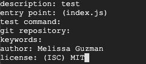

1. Navigate to Google Cloud Platform and create a new project.
2. Select the hamburger menu in the upper left and click on Compute Engine.

3. Create a VM instance from scratch.
a. Click on the button ‘create new instance’

b. Enter a name for the new instance
c. Select the region closest to you.
d. Under the machine type, select 'f1-micro' in the dropdown list.
e. Check both 'Allow HTTP traffic' and 'Allow HTTPS traffic' below Firewall.

f. Click on the Create button.
4. The new VM instance should automatically start. If it doesn’t, click on the play button.
5. Click on ssh. This will open up a terminal window.

6. First we need to install Node Version Manager (NVM).
curl -o- https://raw.githubusercontent.com/nvm-sh/nvm/v0.35.1/install.sh | bash7. Installing the latest version of Node.js run the following:
nvm install stableIf you get nvm command not found, you will need to close your terminal and relaunch it. Once your server has restarted, use the command nvm install stable to install the latest version of Node.js.
To verify that NVM has been installed run the following:
nvm --version8. Install Node by running the following command:
nvm install node1. Now create a folder for the project. Run the following command:
mkdir posts cd posts2. Install Vue Cli. Interactive project scaffolding built on Webpack. Run the following code:
npm install -g @vue/cli3. Initialize the npm by running the following code:
npm init4. Complete the following prompts on the command line/terminal:
a. Package Name: (enter a name) here we used posts. Which was defaulted to the package name field from the directory we made in step 1. Press enter.
b. Version: (version number will appear here in parenthesis) Leave the defaulted and press enter.
c. Description: (for example, test), press enter and then you will see this: entry point: (index.js). Press enter.
d. Test command: You can leave this blank. Press enter.
e. Git repository: You can leave this blank. Press enter.
f. Keywords: You can leave this blank. Press enter.
g. Author: (Your Name) Press enter.
h. License: (Enter the license you’d like to use. We used MIT here) Press enter. 
i. This is what you will see next. Press enter.
5. To intall the package and save it as a dependency in the package.json file, run the following code:
npm install6. Next, we need to create a project to do so use the following command: (You may name your project what you’d like, but for this tutorial we named it client.)
vue create clientNext you will see the following:
Press enter. When it is complete, you will see the following:
Your project is now created.
7. In the command line type the next two commands:
cd client npm run serveYou will see this screen when it is complete:

1. Navigate to MongoDB Cloud Platform and create a new account.
2. Register for a new account.

3. Fill out your information and click continue.
4. Select Starter Clusters and click Create a Cluster.

Starter clusters include the M0, M2, and M5 cluster tiers. These low-cost clusters are suitable for users who are learning MongoDB or developing small proof-of-concept applications.
5. Select your preferred Cloud Provider & Region. For this example, we will be using the Google Cloud Platform.

6. Select M0 Sandbox for cluster tier.
Selecting M0 automatically locks the remaining configuration options. If you cannot select the M0 cluster tier, return to the previous step and select a Cloud Provider & Region that supports M0 Free Tier clusters.
7. Enter a name for your cluster in the Cluster Name field. You can enter any name for your cluster. The cluster name can contain ASCII letters, numbers, and hyphens.
8. Click Create Cluster to deploy the cluster. Once you deploy your cluster, it can take up to 10 minutes for your cluster to provision and become ready to use.
An IP address is a unique numeric identifier for a device connecting to a network. In Atlas, you can only connect to a cluster from a trusted IP address. Within Atlas, you can create a list of trusted IP addresses, referred to as a whitelist, that can be used to connect to your cluster and access your data.
1. Open the Connect dialog. From your Clusters view, click the Connect button for your cluster.

2. Configure your whitelist entry. In the Whitelist your connection IP address step, click Add Your Current IP Address.

3. Click Add IP Address.
You must create a MongoDB user to access your cluster. For security purposes, Atlas requires clients to authenticate as MongoDB users to access clusters.
MongoDB users are separate from Atlas users:
1. Open the Connect dialog. From your Clusters view, click the Connect button for your cluster.

2. In the Create a MongoDB User step of the dialog, enter a Username and Password for your MongoDB user. You’ll use this username and password combination to access data on your cluster.
3. Click Create MongoDB User.
1. Next we installed git:
sudo apt install git2. Next we associated our git user.name with this installation:
git config --global user.name "John Doe"3. Next we associated our git user.email with this installation:
git config --global user.email "johndoe@example.com"4. As a sample, we used git clone to copy/paste a repo in our web space:
sudo git clone (Gene’s repo link goes here)5. We were able to view the web page here: http://34.82.73.108/todo-list/